Next Space
Trackpad mode
Choose Trackpad in the menu and your iPhone becomes a big Mac trackpad: momentum scrolling, drag, right-click and every Mac gesture. No extra screen appears, so nothing on your Mac moves around.
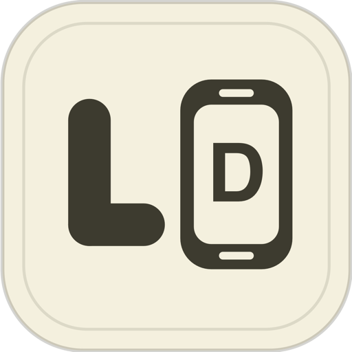
LilDisplay Swipe up to connectScan with LilDisplay on your iPhone or iPad. Code 42 stays the same, so you only pair once.
LilDisplay turns your iPhone or iPad into a real extra monitor for your Mac — or, in one tap, into a big Mac trackpad. Touch, gestures and a keyboard included. Over USB or WiFi, with no router and no account.
Direct device-to-device connection via USB or peer-to-peer WiFi. No data leaves your devices. Privacy Policy
LIVEThese devices work. Tap Connect on the iPhone, then drag a window from the Mac onto it. The website on the Mac is real — click around. Grab a device by its edge to move it.
The biggest update yet: your iPhone is now a trackpad too, and you only pair once.
Choose Trackpad in the menu and your iPhone becomes a big Mac trackpad: momentum scrolling, drag, right-click and every Mac gesture. No extra screen appears, so nothing on your Mac moves around.
Hover Pairing Code in the Mac menu and scan the QR code with the iPhone app or the Camera. The code never changes now, so next time you just tap Connect.
Flick two fingers to go back or forward, twist to rotate, spread four fingers to show the desktop and pinch them to bring your windows back — just like a real trackpad.
See them allIf your Mac is missing Screen Recording or Accessibility permission, the iPhone tells you exactly what to turn on. And you can send the Mac app’s link to your Mac with AirDrop, Messages or Mail.
Setup guideTrackpad mode, pairing with the QR code and setup help need LilDisplay for Mac 3.3. Download it here — it keeps your permissions when you replace the old one.
About two minutes, once.
Get LilDisplay from the App Store on your iPhone or iPad — a free download with 3 free sessions, then a one-time unlock. The Mac app is free and comes from this website.
Reading this on your phone? The iPhone app can send the Mac app’s download link straight to your Mac with AirDrop, Messages or Mail.
Open the downloaded DMG and drag LilDisplay Mac to your Applications folder. Then double-click it — macOS asks once whether to open an app from the internet. Click Open.
It lives in your menu bar, not the Dock: look for LilDisplay · Code NN at the top of the screen.
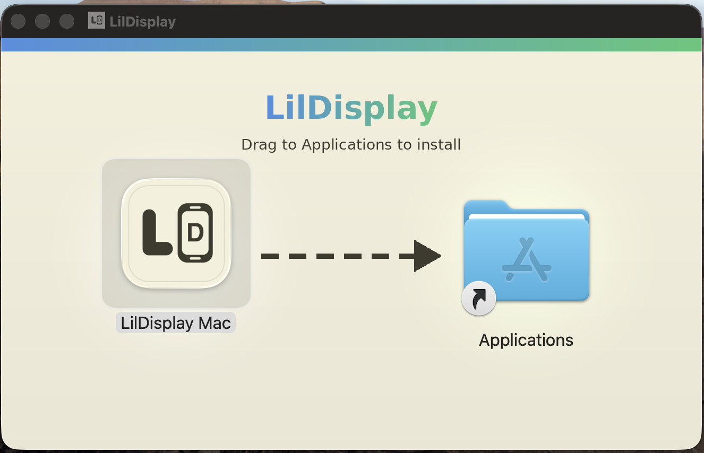
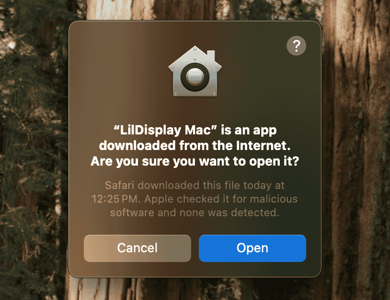
The Mac app asks for both the first time. Click Allow / Open System Settings on each prompt:
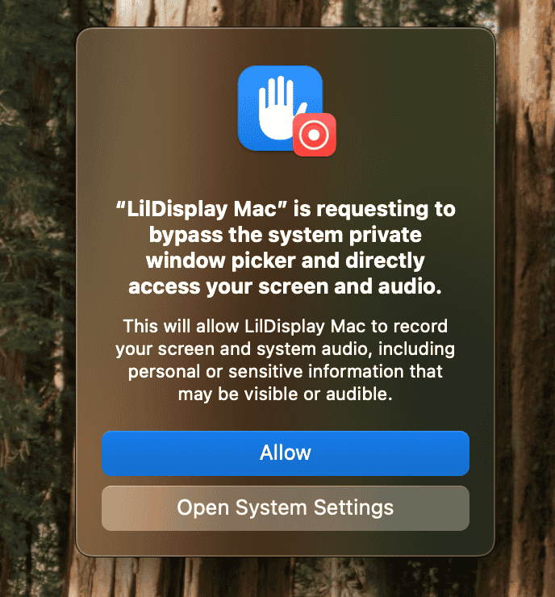
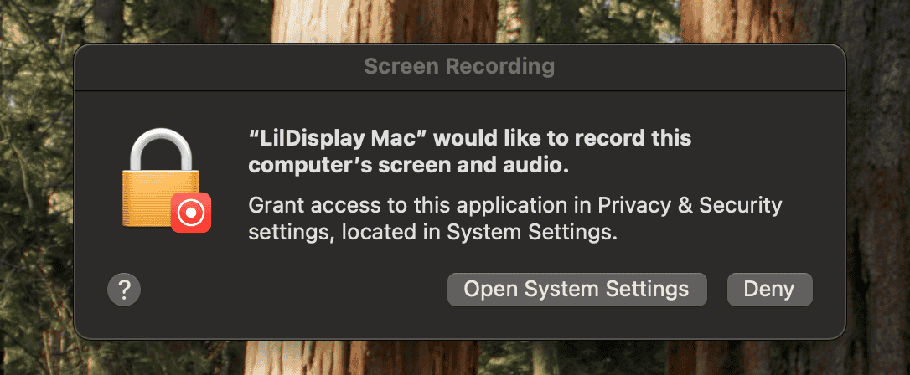
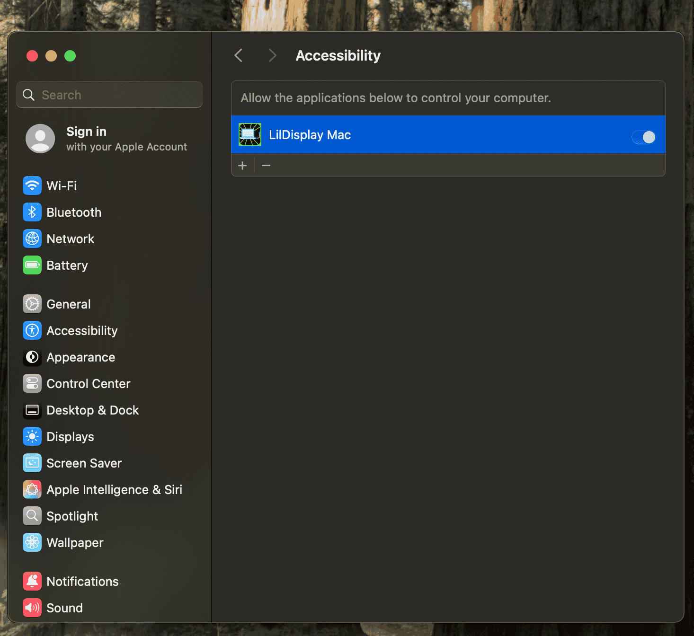
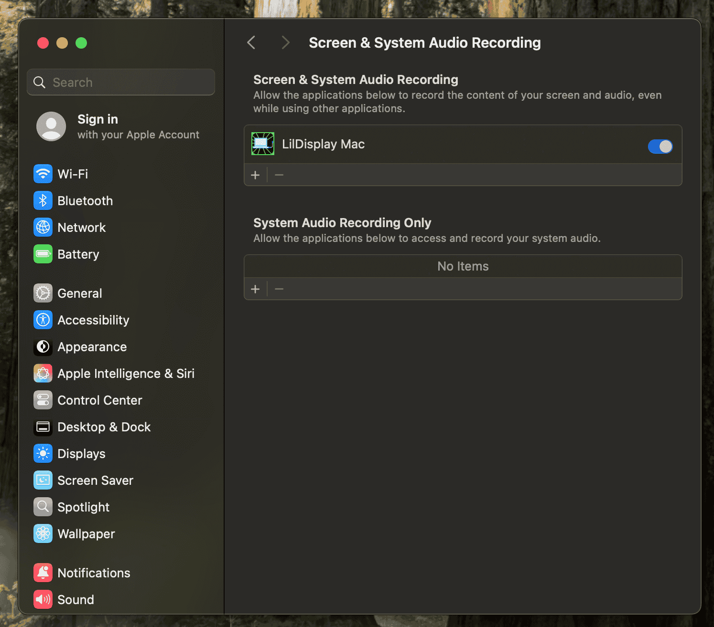
Open LilDisplay on your iPhone or iPad, swipe up for the menu, pick a mode and connect:
Want to see the real menu first? Every item works in the model at the top of this page.
Pick a mode in the iPhone menu. Switch any time, without reconnecting.
Your iPhone or iPad becomes a real extra screen. Drag windows onto it, keep a chat or a timer there, or use it as the only screen of a closed MacBook.
The extra screen, plus touch: tap to click, drag, scroll, use gestures and type with the iPhone keyboard. Direct (tap where you point) or Trackpad-style input.
No extra screen at all — the whole phone is a trackpad for your Mac, with momentum, drag lock, three-finger drag and a keyboard button. Great from the couch.
Everything you need in a portable second display.
Works as a real monitor — extend your desktop and move windows freely. Mirror it in System Settings if you prefer.
Finally, touch input on macOS. Tap, drag and scroll right on the picture.
The whole iPhone as a Mac trackpad. The pointer roams all your screens, and no display is added.
Three- and four-finger swipes for Spaces, Mission Control and App Exposé; Look Up, Show Desktop, Launchpad, back/forward and rotate.
Use your iPhone’s keyboard to type on the Mac — with ⌘, ⌥, ⌃, ⇧, Esc, Tab and arrow keys for shortcuts like ⌘C and ⌘V.
Scan the QR code in the Mac menu, or enter the 2-digit code. It stays the same, so next time you just tap Connect.
Turn on Keep Awake When Lid Is Closed and your iPhone or iPad becomes the screen for a closed MacBook.
Peer-to-peer WiFi straight between your devices — at a café, on a train, anywhere. No shared network required.
Plug in a USB cable for under 10ms latency. Feels instant.
A precise pointer: tap to click, press and drag to select or draw, and hover to move the cursor on supported iPads.
Rotate your iPhone or fold an iPhone Duo and the Mac display follows almost instantly, without reconnecting.
Smooth, Balanced, Sharp or Full Resolution — one choice in the Mac menu sets image quality and display size.
The trackpad gestures you know, on the phone in your hand. Tap a card to try it in the model above.
Swipes use the Mission Control shortcuts in System Settings › Keyboard › Keyboard Shortcuts, so keep those turned on. On iPad, four-finger swipes may be taken by iPadOS.
Real screenshots from iPhones and iPads running LilDisplay.
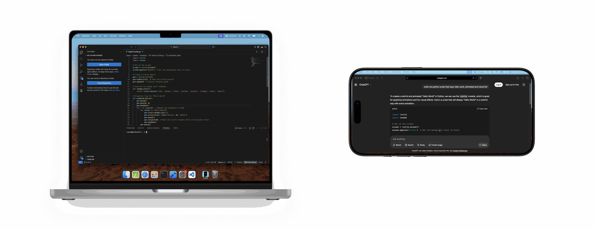
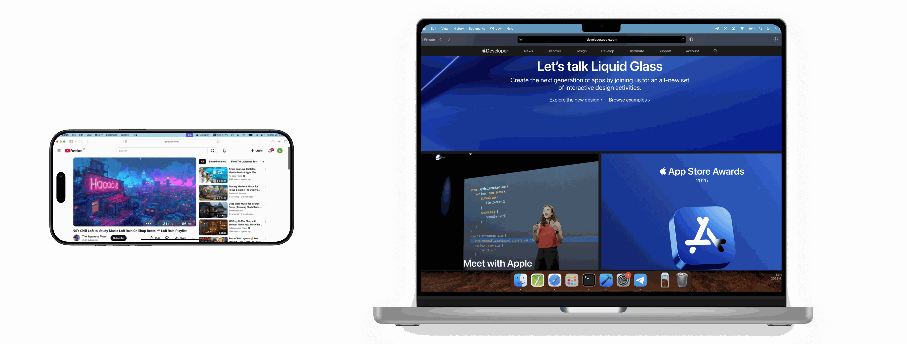
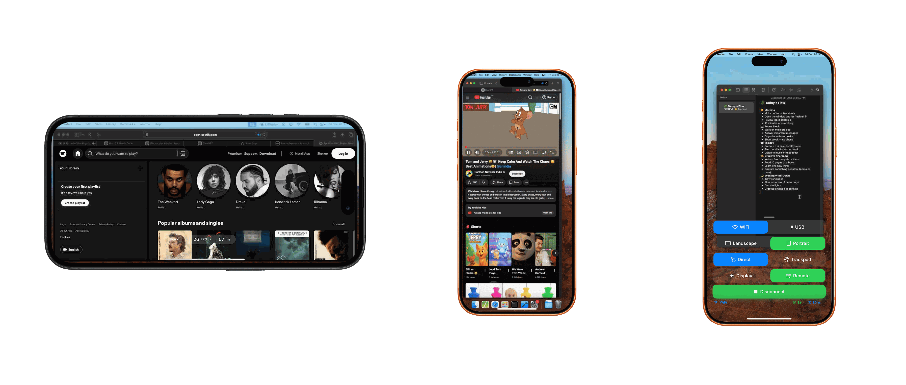
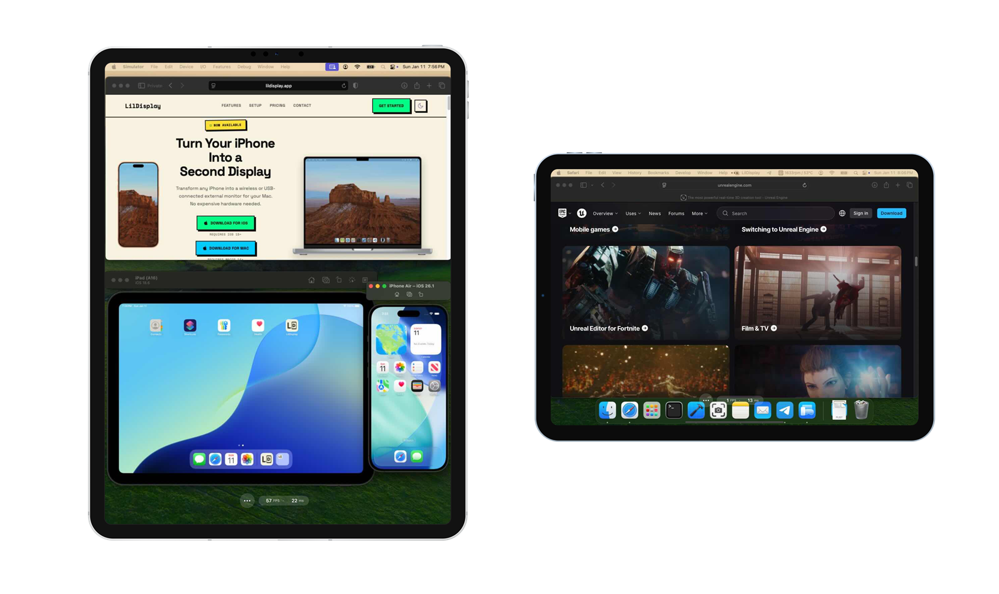
Pay once. Own it forever. No subscription, ever.
3 free sessions — no card needed
Price shown in USD. Your local price is set by the App Store and shown before you buy. Already downloaded LilDisplay before it went paid? You keep full access for free.
Questions people ask before they try it.
A real extended display: macOS sees a new screen you can drag windows onto. If you prefer mirroring, turn it on in System Settings › Displays.
Choose Trackpad in the iPhone menu and your whole iPhone or iPad becomes a Mac trackpad: momentum scrolling, drag, right-click and the Mac gestures. No extra display is added, so nothing on your Mac moves around. It needs LilDisplay for Mac 3.3.
No. Since version 3.3 the Mac keeps its pairing code. Scan the QR code in the LilDisplay menu on your Mac (or enter the code) once; after that, just tap Connect. Want a new code? Advanced › New Pairing Code.
Sidecar only works with an iPad signed in to the same Apple ID as the Mac. LilDisplay also works with iPhone, with any Apple ID, on iPadOS 15.6 or later, and adds trackpad gestures and typing on the Mac.
OpenDisplay is a free, open-source extra screen; Duet Display is a subscription. LilDisplay is a one-time purchase focused on controlling your Mac from the screen: trackpad gestures, a keyboard, Apple Pencil, and WiFi that needs no shared network. Side by side: vs OpenDisplay · vs Sidecar.
No. WiFi mode connects peer-to-peer, directly between your devices, so it works without a router. USB works too and has the lowest latency.
Yes. Turn on Advanced › Keep Awake When Lid Is Closed in the LilDisplay menu on your Mac, and your iPhone or iPad keeps showing the display with the lid shut.
Yes. The Pencil is a precise pointer: tap to click, press and drag to select or draw, and hover to move the cursor on iPads that support hover. There is no pressure sensitivity.
No. Try it with 3 free sessions, then unlock it once. One purchase covers your iPhone and iPad, and the Mac app is free.
None. The picture and your touches go directly between your devices over USB or peer-to-peer WiFi. Nothing passes through a server.
macOS shows it for any app that captures a display. LilDisplay only captures its own virtual display, the one shown on your iPhone or iPad.
macOS hides notifications while a display is shared. To keep them, go to System Settings › Notifications and turn on “Allow notifications when mirroring or sharing the display”.
A Mac with macOS 14 or later, and an iPhone or iPad with iOS or iPadOS 15.6 or later.
The Mac app needs Screen Recording permission. Open System Settings › Privacy & Security › Screen & System Audio Recording and turn on LilDisplay Mac. If it is already on after an update, choose Fix Permissions After Update… from the LilDisplay menu, then reopen the app. With version 3.3 your iPhone tells you which permission is missing.
Questions, feedback, or just want to say hi?
Or email support@lildisplay.app · Support page